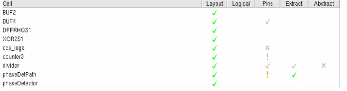

Inspect the Results of Generated Abstracts
After you have generated abstracts for your sample of selected cells, you must evaluate whether the results are satisfactory. Abstract Generator provides various features to help you verify your abstracts. You can inspect the results using the following interfaces:
|
Field
|
Description
|
|
Cell Pane
|
The first source of result evaluation comes from the Cell Pane in the main window. Abstract Generator uses color-coded symbols in the Cell pane to indicate the result of a particular abstract generation flow step. A color-coded symbol against a cell corresponding to a particular step indicates if the step completed without problems or whether warnings or errors were generated during the step.
The Cell pane area also indicates when a particular view becomes invalid, for example through a change in an option setting.

|
|
Layout
|
If you want to see a detailed graphical representation of any view, you can use Virtuoso Layout Suite XL. You can use this software to examine the pin and blockage geometry generated, the sizings and spacings applied, and to make minor edits.
To launch the Virtuoso Layout Suite XL, select Cells – Edit and select a view.
|
|
Report File and Log File
|
You can use the information files generated by Abstract Generator to examine potential problems with abstracts.
All the messages issued by Abstract Generator are stored in a log file (abstract.log) in the run directory. If multiple users are working in the same cell directory, the output is written to the file abstract.log.1 up to the file abstract.log.9.
For more structured information, you can export a report file categorizing the cells in the library according to various criteria. You can also view online information about any cell in your library.
|
Return to top